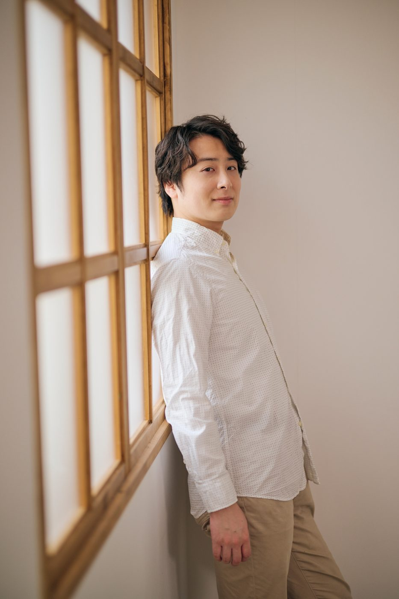

MitsukiGotoOfficial Website
- Musical Actor
- Musician
- Arranger
ミュージカル俳優 ／ 音楽家 ／ 編曲家
News
お知らせ
Profile
プロフィール
写真をタップで拡大
後藤 光葵Mitsuki Goto
茨城県水戸市出身。2月10日生まれ。
株式会社サンカラーズ所属。
洗足学園音楽大学ミュージカルコース卒業。
主な出演作に、『ももクロ一座』（鈴木ひがし演出）、『チェーザレ』（小山ゆうな演出）、Disney on CLASSIC Premium『美女と野獣・アラジン イン・コンサート』（トニークレメンツ演出）、『アニー』バンドルズ役 他【2019年～】（山田和也演出）、『少女革命ウテナ』（吉谷光太郎演出）、『モーツァルト！』（小池修一郎演出）、『コメディ・トゥナイト！〜ローマで起こったおかしな出来事【江戸版】』黒衣 役（宮本亜門演出）、邦楽ミュージカル『夏花火♡恋名残』佐原喜三郎役（倉迫康史演出）、など。
その他、NHK FM「ティティヴィルスの見えない蜂」、NHK「紅白歌合戦」「うたコン」「SONGS」、MBS TBS「シドニアの騎士 第九惑星戦役」angela“騎士行進曲”コーラスなど、舞台を中心に幅広く活動している。
Works
出演歴
主な出演作
- 2019 — 2026
丸美屋食品ミュージカル『アニー』
Annie
- 2018
東宝ミュージカル『モーツァルト！』
Mozart!
- 2023
ミュージカル『チェーザレ 破壊の創造者』
Cesare
- 2020 / 2025
Disney on CLASSIC Premium イン・コンサート
Beauty and the Beast / Aladdin
Gallery
写真・動画